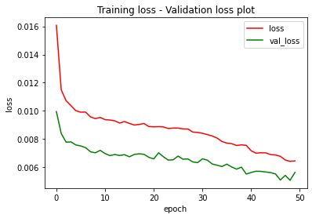

import numpy as np
import pandas as pd
import tensorflow as tf
from tensorflow.keras.layers import Input, LSTM, Dense
from tensorflow.keras import Model
from tensorflow.keras.callbacks import ModelCheckpoint
from tensorflow.keras.optimizers import Adam
from sklearn.model_selection import train_test_split
from sklearn.preprocessing import MinMaxScaler
import matplotlib.pyplot as pltImport
| Sample_no | 시설ID | 일 | 주차 | 내부CO2 | 내부습도 | 내부온도 | 지온 | 강우감지 | 일사량 | 외부온도 | 외부풍향 | 외부풍속 | 지습 | 급액횟수 | 급액EC(dS/m) | 급액pH | 급액량(회당) | 품종 | 재배형태 | |
|---|---|---|---|---|---|---|---|---|---|---|---|---|---|---|---|---|---|---|---|---|
| 0 | 0 | farm25 | 20220323 | 30주차 | 517.041667 | 84.985417 | 20.610833 | 0.0 | NaN | 1879 | 11.166667 | 195.0 | 0.083333 | 0.0 | 14 | 2.68 | 4.42 | 88 | tomato09 | NaN |
| 1 | 0 | farm25 | 20220324 | 30주차 | 514.416667 | 88.291250 | 20.695000 | 0.0 | NaN | 1411 | 12.708333 | 142.5 | 0.000000 | 0.0 | 14 | 2.78 | 5.63 | 97 | tomato09 | NaN |
| 2 | 0 | farm25 | 20220326 | 30주차 | 471.875000 | 83.514583 | 20.402500 | 0.0 | NaN | 1955 | 8.791667 | 202.5 | 0.000000 | 0.0 | 14 | 2.69 | 4.25 | 101 | tomato09 | NaN |
| 3 | 0 | farm25 | 20220327 | 30주차 | 469.250000 | 80.916250 | 20.139167 | 0.0 | NaN | 2231 | 8.041667 | 180.0 | 0.000000 | 0.0 | 14 | 2.70 | 4.25 | 99 | tomato09 | NaN |
| 4 | 0 | farm25 | 20220328 | 30주차 | 465.750000 | 82.026250 | 17.653333 | 0.0 | NaN | 2284 | 9.000000 | 97.5 | 0.041667 | 0.0 | 13 | 2.66 | 4.21 | 94 | tomato09 | NaN |
| Sample_no | 조사일 | 주차 | 생장길이 | 줄기직경 | 개화군 | |
|---|---|---|---|---|---|---|
| 0 | 0 | 20220330 | 30주차 | 208.0 | 6.9 | 16.67 |
| 1 | 1 | 20220330 | 30주차 | 172.0 | 6.8 | 17.33 |
| 2 | 2 | 20220330 | 30주차 | 150.0 | 9.3 | 16.00 |
| 3 | 3 | 20220330 | 30주차 | 121.0 | 5.9 | 16.20 |
| 4 | 4 | 20220406 | 31주차 | 175.0 | 5.8 | 17.40 |
품종 7114
외부풍향 6993
지습 5873
재배형태 2408
지온 1749
강우감지 1505
외부풍속 670
외부온도 201
내부온도 0
일사량 0
시설ID 0
내부습도 0
내부CO2 0
주차 0
급액횟수 0
급액EC(dS/m) 0
급액pH 0
급액량(회당) 0
일 0
Sample_no 0
dtype: int64| 주차 | 내부CO2 | 내부습도 | 내부온도 | 일사량 | 급액횟수 | 급액EC(dS/m) | 급액pH | 급액량(회당) | |
|---|---|---|---|---|---|---|---|---|---|
| 0 | 30 | 517.041667 | 84.985417 | 20.610833 | 1879 | 14 | 2.68 | 4.42 | 88 |
| 1 | 30 | 514.416667 | 88.291250 | 20.695000 | 1411 | 14 | 2.78 | 5.63 | 97 |
| 2 | 30 | 471.875000 | 83.514583 | 20.402500 | 1955 | 14 | 2.69 | 4.25 | 101 |
| 3 | 30 | 469.250000 | 80.916250 | 20.139167 | 2231 | 14 | 2.70 | 4.25 | 99 |
| 4 | 30 | 465.750000 | 82.026250 | 17.653333 | 2284 | 13 | 2.66 | 4.21 | 94 |
| ... | ... | ... | ... | ... | ... | ... | ... | ... | ... |
| 10107 | 7 | 334.684002 | 65.565417 | 21.985833 | 979 | 26 | 2.06 | 5.80 | 81 |
| 10108 | 7 | 333.726601 | 61.144167 | 22.530833 | 2515 | 28 | 2.43 | 4.42 | 32 |
| 10109 | 7 | 344.862883 | 72.867917 | 20.397917 | 1972 | 21 | 2.71 | 5.88 | 27 |
| 10110 | 7 | 372.708516 | 66.672917 | 24.401667 | 1314 | 18 | 2.50 | 5.39 | 82 |
| 10111 | 7 | 372.612192 | 59.257083 | 28.352500 | 1310 | 16 | 2.50 | 5.39 | 82 |
10112 rows × 9 columns
| 생장길이 | 줄기직경 | 개화군 | |
|---|---|---|---|
| 0 | 208.0 | 6.90 | 16.67 |
| 1 | 172.0 | 6.80 | 17.33 |
| 2 | 150.0 | 9.30 | 16.00 |
| 3 | 121.0 | 5.90 | 16.20 |
| 4 | 175.0 | 5.80 | 17.40 |
| ... | ... | ... | ... |
| 1513 | 150.0 | 6.95 | 2.20 |
| 1514 | 140.0 | 10.13 | 1.40 |
| 1515 | 200.0 | 9.61 | 1.40 |
| 1516 | 210.0 | 8.47 | 2.20 |
| 1517 | 150.0 | 9.16 | 3.20 |
1518 rows × 3 columns
# 입력 시계열화
input_ts = []
for i in outputs['Sample_no']:
sample = input_sc[inputs['Sample_no'] == i]
if len(sample < 7):
sample = np.append(np.zeros((7-len(sample), sample.shape[-1])), sample,
axis=0)
sample = np.expand_dims(sample, axis=0)
input_ts.append(sample)
input_ts = np.concatenate(input_ts, axis=0)((1214, 7, 9), (304, 7, 9), (1214, 3), (304, 3))# 모델 정의
def create_model():
x = Input(shape=[7, 9])
l1 = LSTM(64)(x)
out = Dense(3, activation='tanh')(l1)
return Model(inputs=x, outputs=out)
model = create_model()
model.summary()
checkpointer = ModelCheckpoint(monitor='val_loss', filepath='baseline.h5',
verbose=1, save_best_only=True, save_weights_only=True)
model.compile(loss='mse', optimizer=Adam(lr=0.001), metrics=['mse'])Model: "model"
_________________________________________________________________
Layer (type) Output Shape Param #
=================================================================
input_1 (InputLayer) [(None, 7, 9)] 0
lstm (LSTM) (None, 64) 18944
dense (Dense) (None, 3) 195
=================================================================
Total params: 19,139
Trainable params: 19,139
Non-trainable params: 0
_________________________________________________________________WARNING:absl:`lr` is deprecated in Keras optimizer, please use `learning_rate` or use the legacy optimizer, e.g.,tf.keras.optimizers.legacy.Adam.# 학습
hist = model.fit(train_x, train_y, batch_size=32, epochs=50, validation_data=(val_x, val_y), callbacks=[checkpointer])Epoch 1/50
31/38 [=======================>......] - ETA: 0s - loss: 0.0170 - mse: 0.0170
Epoch 1: val_loss improved from inf to 0.00995, saving model to baseline.h5
38/38 [==============================] - 1s 9ms/step - loss: 0.0161 - mse: 0.0161 - val_loss: 0.0099 - val_mse: 0.0099
Epoch 2/50
31/38 [=======================>......] - ETA: 0s - loss: 0.0117 - mse: 0.0117
Epoch 2: val_loss improved from 0.00995 to 0.00839, saving model to baseline.h5
38/38 [==============================] - 0s 2ms/step - loss: 0.0115 - mse: 0.0115 - val_loss: 0.0084 - val_mse: 0.0084
Epoch 3/50
31/38 [=======================>......] - ETA: 0s - loss: 0.0109 - mse: 0.0109
Epoch 3: val_loss improved from 0.00839 to 0.00777, saving model to baseline.h5
38/38 [==============================] - 0s 2ms/step - loss: 0.0107 - mse: 0.0107 - val_loss: 0.0078 - val_mse: 0.0078
Epoch 4/50
32/38 [========================>.....] - ETA: 0s - loss: 0.0106 - mse: 0.0106
Epoch 4: val_loss did not improve from 0.00777
38/38 [==============================] - 0s 2ms/step - loss: 0.0104 - mse: 0.0104 - val_loss: 0.0078 - val_mse: 0.0078
Epoch 5/50
32/38 [========================>.....] - ETA: 0s - loss: 0.0101 - mse: 0.0101
Epoch 5: val_loss improved from 0.00777 to 0.00757, saving model to baseline.h5
38/38 [==============================] - 0s 2ms/step - loss: 0.0100 - mse: 0.0100 - val_loss: 0.0076 - val_mse: 0.0076
Epoch 6/50
31/38 [=======================>......] - ETA: 0s - loss: 0.0105 - mse: 0.0105
Epoch 6: val_loss improved from 0.00757 to 0.00751, saving model to baseline.h5
38/38 [==============================] - 0s 2ms/step - loss: 0.0099 - mse: 0.0099 - val_loss: 0.0075 - val_mse: 0.0075
Epoch 7/50
31/38 [=======================>......] - ETA: 0s - loss: 0.0098 - mse: 0.0098
Epoch 7: val_loss improved from 0.00751 to 0.00738, saving model to baseline.h5
38/38 [==============================] - 0s 2ms/step - loss: 0.0099 - mse: 0.0099 - val_loss: 0.0074 - val_mse: 0.0074
Epoch 8/50
31/38 [=======================>......] - ETA: 0s - loss: 0.0092 - mse: 0.0092
Epoch 8: val_loss improved from 0.00738 to 0.00709, saving model to baseline.h5
38/38 [==============================] - 0s 2ms/step - loss: 0.0096 - mse: 0.0096 - val_loss: 0.0071 - val_mse: 0.0071
Epoch 9/50
31/38 [=======================>......] - ETA: 0s - loss: 0.0092 - mse: 0.0092
Epoch 9: val_loss improved from 0.00709 to 0.00702, saving model to baseline.h5
38/38 [==============================] - 0s 2ms/step - loss: 0.0094 - mse: 0.0094 - val_loss: 0.0070 - val_mse: 0.0070
Epoch 10/50
33/38 [=========================>....] - ETA: 0s - loss: 0.0095 - mse: 0.0095
Epoch 10: val_loss did not improve from 0.00702
38/38 [==============================] - 0s 2ms/step - loss: 0.0095 - mse: 0.0095 - val_loss: 0.0072 - val_mse: 0.0072
Epoch 11/50
32/38 [========================>.....] - ETA: 0s - loss: 0.0092 - mse: 0.0092
Epoch 11: val_loss improved from 0.00702 to 0.00696, saving model to baseline.h5
38/38 [==============================] - 0s 2ms/step - loss: 0.0094 - mse: 0.0094 - val_loss: 0.0070 - val_mse: 0.0070
Epoch 12/50
33/38 [=========================>....] - ETA: 0s - loss: 0.0095 - mse: 0.0095
Epoch 12: val_loss improved from 0.00696 to 0.00682, saving model to baseline.h5
38/38 [==============================] - 0s 2ms/step - loss: 0.0093 - mse: 0.0093 - val_loss: 0.0068 - val_mse: 0.0068
Epoch 13/50
34/38 [=========================>....] - ETA: 0s - loss: 0.0091 - mse: 0.0091
Epoch 13: val_loss did not improve from 0.00682
38/38 [==============================] - 0s 2ms/step - loss: 0.0093 - mse: 0.0093 - val_loss: 0.0069 - val_mse: 0.0069
Epoch 14/50
33/38 [=========================>....] - ETA: 0s - loss: 0.0092 - mse: 0.0092
Epoch 14: val_loss did not improve from 0.00682
38/38 [==============================] - 0s 2ms/step - loss: 0.0091 - mse: 0.0091 - val_loss: 0.0068 - val_mse: 0.0068
Epoch 15/50
33/38 [=========================>....] - ETA: 0s - loss: 0.0094 - mse: 0.0094
Epoch 15: val_loss did not improve from 0.00682
38/38 [==============================] - 0s 2ms/step - loss: 0.0092 - mse: 0.0092 - val_loss: 0.0069 - val_mse: 0.0069
Epoch 16/50
33/38 [=========================>....] - ETA: 0s - loss: 0.0088 - mse: 0.0088
Epoch 16: val_loss improved from 0.00682 to 0.00674, saving model to baseline.h5
38/38 [==============================] - 0s 2ms/step - loss: 0.0091 - mse: 0.0091 - val_loss: 0.0067 - val_mse: 0.0067
Epoch 17/50
34/38 [=========================>....] - ETA: 0s - loss: 0.0091 - mse: 0.0091
Epoch 17: val_loss did not improve from 0.00674
38/38 [==============================] - 0s 2ms/step - loss: 0.0090 - mse: 0.0090 - val_loss: 0.0069 - val_mse: 0.0069
Epoch 18/50
34/38 [=========================>....] - ETA: 0s - loss: 0.0093 - mse: 0.0093
Epoch 18: val_loss did not improve from 0.00674
38/38 [==============================] - 0s 2ms/step - loss: 0.0090 - mse: 0.0090 - val_loss: 0.0069 - val_mse: 0.0069
Epoch 19/50
33/38 [=========================>....] - ETA: 0s - loss: 0.0091 - mse: 0.0091
Epoch 19: val_loss did not improve from 0.00674
38/38 [==============================] - 0s 2ms/step - loss: 0.0091 - mse: 0.0091 - val_loss: 0.0069 - val_mse: 0.0069
Epoch 20/50
33/38 [=========================>....] - ETA: 0s - loss: 0.0086 - mse: 0.0086
Epoch 20: val_loss improved from 0.00674 to 0.00670, saving model to baseline.h5
38/38 [==============================] - 0s 2ms/step - loss: 0.0089 - mse: 0.0089 - val_loss: 0.0067 - val_mse: 0.0067
Epoch 21/50
34/38 [=========================>....] - ETA: 0s - loss: 0.0093 - mse: 0.0093
Epoch 21: val_loss improved from 0.00670 to 0.00659, saving model to baseline.h5
38/38 [==============================] - 0s 2ms/step - loss: 0.0089 - mse: 0.0089 - val_loss: 0.0066 - val_mse: 0.0066
Epoch 22/50
34/38 [=========================>....] - ETA: 0s - loss: 0.0091 - mse: 0.0091
Epoch 22: val_loss did not improve from 0.00659
38/38 [==============================] - 0s 2ms/step - loss: 0.0089 - mse: 0.0089 - val_loss: 0.0070 - val_mse: 0.0070
Epoch 23/50
34/38 [=========================>....] - ETA: 0s - loss: 0.0088 - mse: 0.0088
Epoch 23: val_loss did not improve from 0.00659
38/38 [==============================] - 0s 2ms/step - loss: 0.0089 - mse: 0.0089 - val_loss: 0.0067 - val_mse: 0.0067
Epoch 24/50
34/38 [=========================>....] - ETA: 0s - loss: 0.0090 - mse: 0.0090
Epoch 24: val_loss improved from 0.00659 to 0.00650, saving model to baseline.h5
38/38 [==============================] - 0s 2ms/step - loss: 0.0087 - mse: 0.0087 - val_loss: 0.0065 - val_mse: 0.0065
Epoch 25/50
32/38 [========================>.....] - ETA: 0s - loss: 0.0089 - mse: 0.0089
Epoch 25: val_loss did not improve from 0.00650
38/38 [==============================] - 0s 2ms/step - loss: 0.0088 - mse: 0.0088 - val_loss: 0.0065 - val_mse: 0.0065
Epoch 26/50
33/38 [=========================>....] - ETA: 0s - loss: 0.0086 - mse: 0.0086
Epoch 26: val_loss did not improve from 0.00650
38/38 [==============================] - 0s 2ms/step - loss: 0.0088 - mse: 0.0088 - val_loss: 0.0068 - val_mse: 0.0068
Epoch 27/50
34/38 [=========================>....] - ETA: 0s - loss: 0.0091 - mse: 0.0091
Epoch 27: val_loss did not improve from 0.00650
38/38 [==============================] - 0s 2ms/step - loss: 0.0087 - mse: 0.0087 - val_loss: 0.0066 - val_mse: 0.0066
Epoch 28/50
34/38 [=========================>....] - ETA: 0s - loss: 0.0089 - mse: 0.0089
Epoch 28: val_loss did not improve from 0.00650
38/38 [==============================] - 0s 2ms/step - loss: 0.0087 - mse: 0.0087 - val_loss: 0.0066 - val_mse: 0.0066
Epoch 29/50
34/38 [=========================>....] - ETA: 0s - loss: 0.0088 - mse: 0.0088
Epoch 29: val_loss improved from 0.00650 to 0.00637, saving model to baseline.h5
38/38 [==============================] - 0s 2ms/step - loss: 0.0085 - mse: 0.0085 - val_loss: 0.0064 - val_mse: 0.0064
Epoch 30/50
33/38 [=========================>....] - ETA: 0s - loss: 0.0084 - mse: 0.0084
Epoch 30: val_loss improved from 0.00637 to 0.00632, saving model to baseline.h5
38/38 [==============================] - 0s 2ms/step - loss: 0.0085 - mse: 0.0085 - val_loss: 0.0063 - val_mse: 0.0063
Epoch 31/50
33/38 [=========================>....] - ETA: 0s - loss: 0.0085 - mse: 0.0085
Epoch 31: val_loss did not improve from 0.00632
38/38 [==============================] - 0s 2ms/step - loss: 0.0084 - mse: 0.0084 - val_loss: 0.0066 - val_mse: 0.0066
Epoch 32/50
32/38 [========================>.....] - ETA: 0s - loss: 0.0077 - mse: 0.0077
Epoch 32: val_loss did not improve from 0.00632
38/38 [==============================] - 0s 2ms/step - loss: 0.0083 - mse: 0.0083 - val_loss: 0.0065 - val_mse: 0.0065
Epoch 33/50
34/38 [=========================>....] - ETA: 0s - loss: 0.0085 - mse: 0.0085
Epoch 33: val_loss improved from 0.00632 to 0.00623, saving model to baseline.h5
38/38 [==============================] - 0s 2ms/step - loss: 0.0082 - mse: 0.0082 - val_loss: 0.0062 - val_mse: 0.0062
Epoch 34/50
33/38 [=========================>....] - ETA: 0s - loss: 0.0082 - mse: 0.0082
Epoch 34: val_loss improved from 0.00623 to 0.00614, saving model to baseline.h5
38/38 [==============================] - 0s 2ms/step - loss: 0.0081 - mse: 0.0081 - val_loss: 0.0061 - val_mse: 0.0061
Epoch 35/50
33/38 [=========================>....] - ETA: 0s - loss: 0.0080 - mse: 0.0080
Epoch 35: val_loss improved from 0.00614 to 0.00604, saving model to baseline.h5
38/38 [==============================] - 0s 2ms/step - loss: 0.0078 - mse: 0.0078 - val_loss: 0.0060 - val_mse: 0.0060
Epoch 36/50
34/38 [=========================>....] - ETA: 0s - loss: 0.0074 - mse: 0.0074
Epoch 36: val_loss did not improve from 0.00604
38/38 [==============================] - 0s 2ms/step - loss: 0.0077 - mse: 0.0077 - val_loss: 0.0062 - val_mse: 0.0062
Epoch 37/50
33/38 [=========================>....] - ETA: 0s - loss: 0.0074 - mse: 0.0074
Epoch 37: val_loss improved from 0.00604 to 0.00601, saving model to baseline.h5
38/38 [==============================] - 0s 2ms/step - loss: 0.0077 - mse: 0.0077 - val_loss: 0.0060 - val_mse: 0.0060
Epoch 38/50
32/38 [========================>.....] - ETA: 0s - loss: 0.0075 - mse: 0.0075
Epoch 38: val_loss improved from 0.00601 to 0.00586, saving model to baseline.h5
38/38 [==============================] - 0s 2ms/step - loss: 0.0075 - mse: 0.0075 - val_loss: 0.0059 - val_mse: 0.0059
Epoch 39/50
34/38 [=========================>....] - ETA: 0s - loss: 0.0078 - mse: 0.0078
Epoch 39: val_loss did not improve from 0.00586
38/38 [==============================] - 0s 2ms/step - loss: 0.0076 - mse: 0.0076 - val_loss: 0.0060 - val_mse: 0.0060
Epoch 40/50
33/38 [=========================>....] - ETA: 0s - loss: 0.0075 - mse: 0.0075
Epoch 40: val_loss improved from 0.00586 to 0.00551, saving model to baseline.h5
38/38 [==============================] - 0s 2ms/step - loss: 0.0075 - mse: 0.0075 - val_loss: 0.0055 - val_mse: 0.0055
Epoch 41/50
34/38 [=========================>....] - ETA: 0s - loss: 0.0070 - mse: 0.0070
Epoch 41: val_loss did not improve from 0.00551
38/38 [==============================] - 0s 2ms/step - loss: 0.0072 - mse: 0.0072 - val_loss: 0.0056 - val_mse: 0.0056
Epoch 42/50
34/38 [=========================>....] - ETA: 0s - loss: 0.0068 - mse: 0.0068
Epoch 42: val_loss did not improve from 0.00551
38/38 [==============================] - 0s 2ms/step - loss: 0.0070 - mse: 0.0070 - val_loss: 0.0057 - val_mse: 0.0057
Epoch 43/50
34/38 [=========================>....] - ETA: 0s - loss: 0.0070 - mse: 0.0070
Epoch 43: val_loss did not improve from 0.00551
38/38 [==============================] - 0s 2ms/step - loss: 0.0070 - mse: 0.0070 - val_loss: 0.0057 - val_mse: 0.0057
Epoch 44/50
33/38 [=========================>....] - ETA: 0s - loss: 0.0071 - mse: 0.0071
Epoch 44: val_loss did not improve from 0.00551
38/38 [==============================] - 0s 2ms/step - loss: 0.0070 - mse: 0.0070 - val_loss: 0.0057 - val_mse: 0.0057
Epoch 45/50
33/38 [=========================>....] - ETA: 0s - loss: 0.0067 - mse: 0.0067
Epoch 45: val_loss did not improve from 0.00551
38/38 [==============================] - 0s 2ms/step - loss: 0.0069 - mse: 0.0069 - val_loss: 0.0056 - val_mse: 0.0056
Epoch 46/50
34/38 [=========================>....] - ETA: 0s - loss: 0.0070 - mse: 0.0070
Epoch 46: val_loss did not improve from 0.00551
38/38 [==============================] - 0s 2ms/step - loss: 0.0069 - mse: 0.0069 - val_loss: 0.0055 - val_mse: 0.0055
Epoch 47/50
33/38 [=========================>....] - ETA: 0s - loss: 0.0070 - mse: 0.0070
Epoch 47: val_loss improved from 0.00551 to 0.00509, saving model to baseline.h5
38/38 [==============================] - 0s 2ms/step - loss: 0.0068 - mse: 0.0068 - val_loss: 0.0051 - val_mse: 0.0051
Epoch 48/50
34/38 [=========================>....] - ETA: 0s - loss: 0.0067 - mse: 0.0067
Epoch 48: val_loss did not improve from 0.00509
38/38 [==============================] - 0s 2ms/step - loss: 0.0065 - mse: 0.0065 - val_loss: 0.0054 - val_mse: 0.0054
Epoch 49/50
33/38 [=========================>....] - ETA: 0s - loss: 0.0062 - mse: 0.0062
Epoch 49: val_loss improved from 0.00509 to 0.00507, saving model to baseline.h5
38/38 [==============================] - 0s 2ms/step - loss: 0.0064 - mse: 0.0064 - val_loss: 0.0051 - val_mse: 0.0051
Epoch 50/50
34/38 [=========================>....] - ETA: 0s - loss: 0.0067 - mse: 0.0067
Epoch 50: val_loss did not improve from 0.00507
38/38 [==============================] - 0s 2ms/step - loss: 0.0064 - mse: 0.0064 - val_loss: 0.0056 - val_mse: 0.0056# loss 히스토리 확인
fig, loss_ax = plt.subplots()
loss_ax.plot(hist.history['loss'], 'r', label='loss')
loss_ax.plot(hist.history['val_loss'], 'g', label='val_loss')
loss_ax.set_xlabel('epoch')
loss_ax.set_ylabel('loss')
loss_ax.legend()
plt.title('Training loss - Validation loss plot')
plt.show()
# 테스트셋 전처리 및 추론
test_inputs = pd.read_csv('./farm/test_input.csv')
output_sample = pd.read_csv('./farm/answer_sample.csv')
test_inputs = test_inputs[inputs.columns]
test_inputs['주차'] = [int(i.replace('주차', "")) for i in test_inputs['주차']]
test_input_sc = input_scaler.transform(test_inputs.iloc[:,3:].to_numpy())
test_input_ts = []
for i in output_sample['Sample_no']:
sample = test_input_sc[test_inputs['Sample_no'] == i]
if len(sample < 7):
sample = np.append(np.zeros((7-len(sample), sample.shape[-1])), sample,
axis=0)
sample = np.expand_dims(sample, axis=0)
test_input_ts.append(sample)
test_input_ts = np.concatenate(test_input_ts, axis=0)prediction = model.predict(test_input_ts)
prediction = output_scaler.inverse_transform(prediction)
output_sample[['생장길이', '줄기직경', '개화군']] = prediction16/16 [==============================] - 0s 793us/step| Sample_no | 조사일 | 주차 | 생장길이 | 줄기직경 | 개화군 | |
|---|---|---|---|---|---|---|
| 0 | 9 | 20220413 | 32주차 | 47.151882 | 7.198693 | 13.229403 |
| 1 | 12 | 20170312 | 30주차 | 420.956116 | 3.321363 | 10.489825 |
| 2 | 19 | 20170319 | 31주차 | 589.641235 | 4.079537 | 7.553223 |
| 3 | 23 | 20170326 | 32주차 | 281.593994 | 4.563877 | 7.977988 |
| 4 | 27 | 20170430 | 37주차 | 89.870880 | 7.789731 | 4.768530 |
| ... | ... | ... | ... | ... | ... | ... |
| 501 | 2015 | 20160508 | 14주차 | 188.253265 | 12.274371 | 5.467629 |
| 502 | 2016 | 20160529 | 17주차 | 1998.461670 | 4.776089 | 1.905745 |
| 503 | 2024 | 20160828 | 7주차 | 49.577644 | 13.211569 | 2.025992 |
| 504 | 2025 | 20160828 | 7주차 | 49.577755 | 13.211572 | 2.025991 |
| 505 | 2026 | 20160828 | 7주차 | 49.577755 | 13.211572 | 2.025991 |
506 rows × 6 columns
- 텐서보드
# 학습
cb1 = tf.keras.callbacks.TensorBoard()
model.fit(train_x, train_y, batch_size=32, epochs=50, validation_data=(val_x, val_y), callbacks=[cb1])Epoch 1/50
38/38 [==============================] - 0s 3ms/step - loss: 0.0062 - mse: 0.0062 - val_loss: 0.0049 - val_mse: 0.0049
Epoch 2/50
38/38 [==============================] - 0s 2ms/step - loss: 0.0063 - mse: 0.0063 - val_loss: 0.0052 - val_mse: 0.0052
Epoch 3/50
38/38 [==============================] - 0s 2ms/step - loss: 0.0064 - mse: 0.0064 - val_loss: 0.0051 - val_mse: 0.0051
Epoch 4/50
38/38 [==============================] - 0s 2ms/step - loss: 0.0062 - mse: 0.0062 - val_loss: 0.0049 - val_mse: 0.0049
Epoch 5/50
38/38 [==============================] - 0s 2ms/step - loss: 0.0060 - mse: 0.0060 - val_loss: 0.0051 - val_mse: 0.0051
Epoch 6/50
38/38 [==============================] - 0s 2ms/step - loss: 0.0058 - mse: 0.0058 - val_loss: 0.0046 - val_mse: 0.0046
Epoch 7/50
38/38 [==============================] - 0s 2ms/step - loss: 0.0060 - mse: 0.0060 - val_loss: 0.0048 - val_mse: 0.0048
Epoch 8/50
38/38 [==============================] - 0s 2ms/step - loss: 0.0058 - mse: 0.0058 - val_loss: 0.0047 - val_mse: 0.0047
Epoch 9/50
38/38 [==============================] - 0s 2ms/step - loss: 0.0056 - mse: 0.0056 - val_loss: 0.0047 - val_mse: 0.0047
Epoch 10/50
38/38 [==============================] - 0s 2ms/step - loss: 0.0054 - mse: 0.0054 - val_loss: 0.0052 - val_mse: 0.0052
Epoch 11/50
38/38 [==============================] - 0s 2ms/step - loss: 0.0056 - mse: 0.0056 - val_loss: 0.0055 - val_mse: 0.0055
Epoch 12/50
38/38 [==============================] - 0s 2ms/step - loss: 0.0057 - mse: 0.0057 - val_loss: 0.0052 - val_mse: 0.0052
Epoch 13/50
38/38 [==============================] - 0s 2ms/step - loss: 0.0053 - mse: 0.0053 - val_loss: 0.0046 - val_mse: 0.0046
Epoch 14/50
38/38 [==============================] - 0s 2ms/step - loss: 0.0053 - mse: 0.0053 - val_loss: 0.0047 - val_mse: 0.0047
Epoch 15/50
38/38 [==============================] - 0s 2ms/step - loss: 0.0050 - mse: 0.0050 - val_loss: 0.0048 - val_mse: 0.0048
Epoch 16/50
38/38 [==============================] - 0s 2ms/step - loss: 0.0052 - mse: 0.0052 - val_loss: 0.0045 - val_mse: 0.0045
Epoch 17/50
38/38 [==============================] - 0s 2ms/step - loss: 0.0049 - mse: 0.0049 - val_loss: 0.0044 - val_mse: 0.0044
Epoch 18/50
38/38 [==============================] - 0s 2ms/step - loss: 0.0048 - mse: 0.0048 - val_loss: 0.0042 - val_mse: 0.0042
Epoch 19/50
38/38 [==============================] - 0s 2ms/step - loss: 0.0048 - mse: 0.0048 - val_loss: 0.0046 - val_mse: 0.0046
Epoch 20/50
38/38 [==============================] - 0s 2ms/step - loss: 0.0050 - mse: 0.0050 - val_loss: 0.0050 - val_mse: 0.0050
Epoch 21/50
38/38 [==============================] - 0s 2ms/step - loss: 0.0047 - mse: 0.0047 - val_loss: 0.0043 - val_mse: 0.0043
Epoch 22/50
38/38 [==============================] - 0s 2ms/step - loss: 0.0046 - mse: 0.0046 - val_loss: 0.0046 - val_mse: 0.0046
Epoch 23/50
38/38 [==============================] - 0s 2ms/step - loss: 0.0046 - mse: 0.0046 - val_loss: 0.0046 - val_mse: 0.0046
Epoch 24/50
38/38 [==============================] - 0s 2ms/step - loss: 0.0045 - mse: 0.0045 - val_loss: 0.0047 - val_mse: 0.0047
Epoch 25/50
38/38 [==============================] - 0s 2ms/step - loss: 0.0044 - mse: 0.0044 - val_loss: 0.0046 - val_mse: 0.0046
Epoch 26/50
38/38 [==============================] - 0s 2ms/step - loss: 0.0043 - mse: 0.0043 - val_loss: 0.0045 - val_mse: 0.0045
Epoch 27/50
38/38 [==============================] - 0s 2ms/step - loss: 0.0042 - mse: 0.0042 - val_loss: 0.0043 - val_mse: 0.0043
Epoch 28/50
38/38 [==============================] - 0s 2ms/step - loss: 0.0042 - mse: 0.0042 - val_loss: 0.0045 - val_mse: 0.0045
Epoch 29/50
38/38 [==============================] - 0s 2ms/step - loss: 0.0041 - mse: 0.0041 - val_loss: 0.0045 - val_mse: 0.0045
Epoch 30/50
38/38 [==============================] - 0s 2ms/step - loss: 0.0041 - mse: 0.0041 - val_loss: 0.0040 - val_mse: 0.0040
Epoch 31/50
38/38 [==============================] - 0s 2ms/step - loss: 0.0042 - mse: 0.0042 - val_loss: 0.0041 - val_mse: 0.0041
Epoch 32/50
38/38 [==============================] - 0s 2ms/step - loss: 0.0042 - mse: 0.0042 - val_loss: 0.0046 - val_mse: 0.0046
Epoch 33/50
38/38 [==============================] - 0s 3ms/step - loss: 0.0040 - mse: 0.0040 - val_loss: 0.0041 - val_mse: 0.0041
Epoch 34/50
38/38 [==============================] - 0s 2ms/step - loss: 0.0039 - mse: 0.0039 - val_loss: 0.0042 - val_mse: 0.0042
Epoch 35/50
38/38 [==============================] - 0s 2ms/step - loss: 0.0038 - mse: 0.0038 - val_loss: 0.0042 - val_mse: 0.0042
Epoch 36/50
38/38 [==============================] - 0s 2ms/step - loss: 0.0040 - mse: 0.0040 - val_loss: 0.0040 - val_mse: 0.0040
Epoch 37/50
38/38 [==============================] - 0s 2ms/step - loss: 0.0040 - mse: 0.0040 - val_loss: 0.0038 - val_mse: 0.0038
Epoch 38/50
38/38 [==============================] - 0s 2ms/step - loss: 0.0038 - mse: 0.0038 - val_loss: 0.0041 - val_mse: 0.0041
Epoch 39/50
38/38 [==============================] - 0s 2ms/step - loss: 0.0037 - mse: 0.0037 - val_loss: 0.0042 - val_mse: 0.0042
Epoch 40/50
38/38 [==============================] - 0s 2ms/step - loss: 0.0037 - mse: 0.0037 - val_loss: 0.0041 - val_mse: 0.0041
Epoch 41/50
38/38 [==============================] - 0s 2ms/step - loss: 0.0035 - mse: 0.0035 - val_loss: 0.0040 - val_mse: 0.0040
Epoch 42/50
38/38 [==============================] - 0s 2ms/step - loss: 0.0035 - mse: 0.0035 - val_loss: 0.0041 - val_mse: 0.0041
Epoch 43/50
38/38 [==============================] - 0s 2ms/step - loss: 0.0038 - mse: 0.0038 - val_loss: 0.0042 - val_mse: 0.0042
Epoch 44/50
38/38 [==============================] - 0s 2ms/step - loss: 0.0035 - mse: 0.0035 - val_loss: 0.0039 - val_mse: 0.0039
Epoch 45/50
38/38 [==============================] - 0s 2ms/step - loss: 0.0034 - mse: 0.0034 - val_loss: 0.0041 - val_mse: 0.0041
Epoch 46/50
38/38 [==============================] - 0s 2ms/step - loss: 0.0036 - mse: 0.0036 - val_loss: 0.0037 - val_mse: 0.0037
Epoch 47/50
38/38 [==============================] - 0s 2ms/step - loss: 0.0035 - mse: 0.0035 - val_loss: 0.0040 - val_mse: 0.0040
Epoch 48/50
38/38 [==============================] - 0s 2ms/step - loss: 0.0035 - mse: 0.0035 - val_loss: 0.0039 - val_mse: 0.0039
Epoch 49/50
38/38 [==============================] - 0s 2ms/step - loss: 0.0034 - mse: 0.0034 - val_loss: 0.0038 - val_mse: 0.0038
Epoch 50/50
38/38 [==============================] - 0s 2ms/step - loss: 0.0035 - mse: 0.0035 - val_loss: 0.0036 - val_mse: 0.0036<keras.callbacks.History at 0x7f2df8e88b80>